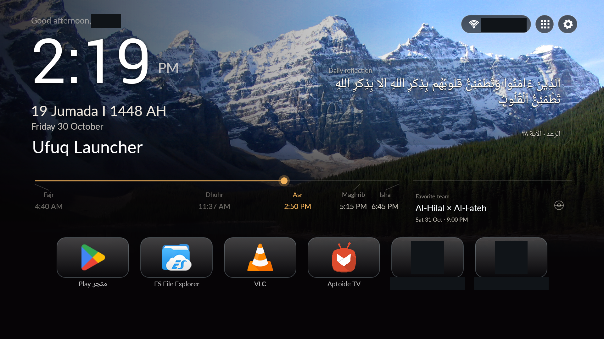
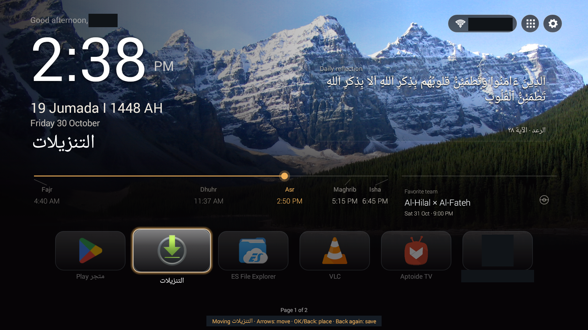
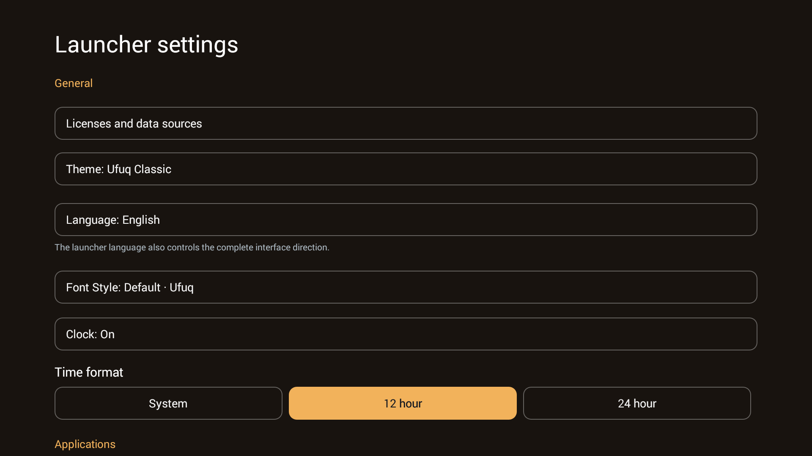

Ufuq — English gallery
Real full 1920×1080 TV captures with privacy masks only. Dark rectangles are not Ufuq UI. No replacement names/icons. Earlier captures, not new runtime tests; see Credits and Provenance.
Local owner review — no upload or public release. Accepted app source 7091b90; APK hash begins 17fe36e3.
Themes
Three palettes, the same full Home geometry.

Classic Home — Actual full Home. Clock, dates, reflection, prayer/football horizon, navigation and the complete dock remain in place. Private name/SSID and two private app entries masked; common app icons retained.
Screenshot UI: EnglishMidnight Home — Actual full Home. Clock, dates, reflection, prayer/football horizon, navigation and the complete dock remain in place. Private name/SSID and two private app entries masked; common app icons retained.
Screenshot UI: EnglishCoast Home — Actual full Home. Clock, dates, reflection, prayer/football horizon, navigation and the complete dock remain in place. Private name/SSID and two private app entries masked; common app icons retained.
Screenshot UI: EnglishCinematic Home and wallpapers
The sunset image is an actual Arabic capture; no English sunset frame is claimed.
 Cinematic sunset and dimming — Actual sunset scene with dimming. Wallpaper and theme are independent; privacy masks do not change the layout.
Cinematic sunset and dimming — Actual sunset scene with dimming. Wallpaper and theme are independent; privacy masks do not change the layout.
Screenshot UI: Arabic — explicitly shared capture, not a translated or relabeled interfaceFavorite apps and dock sizing
Small/Medium/Large and whole-card pages are real settings. The Home frames above retain the entire dock; private entries alone are masked.
 Fixed wallpaper and dock size — Actual Fixed mode, chosen scene, Large dock selection and dimming row. The interval row is below the viewport; do not treat this frame as proof of its disabled state.
Fixed wallpaper and dock size — Actual Fixed mode, chosen scene, Large dock selection and dimming row. The interval row is below the viewport; do not treat this frame as proof of its disabled state.
Screenshot UI: Arabic — explicitly shared capture, not a translated or relabeled interfaceApp library and favorite movement
The current catalog capture is Arabic. Move mode has both Arabic and English captures. No protected app was opened for this gallery.
 App library — Actual catalog with recognizable public apps. Five private/tool entries are masked; masked cells are not empty application slots.
App library — Actual catalog with recognizable public apps. Five private/tool entries are masked; masked cells are not empty application slots.
Screenshot UI: Arabic — explicitly shared capture, not a translated or relabeled interface
Move favorites across pages — Actual move mode after one menu selection and an immediate arrow. Screenshot is not proof of a new physical press; earlier tests distinguish injected and owner physical input.
Screenshot UI: EnglishQuran / Hadith and full reading
Full-reading captures are Arabic. Canonical Quran/Hadith text intentionally remains Arabic in either UI language; no translation or English-labeled dialog is invented.
 Read the complete Quran entry — Actual full-reading dialog, source and license links. Quran wording/diacritics untouched. Private background data masked.
Read the complete Quran entry — Actual full-reading dialog, source and license links. Quran wording/diacritics untouched. Private background data masked.
Screenshot UI: Arabic — explicitly shared capture, not a translated or relabeled interface Read the complete Hadith selection — Actual attributed Hadith reading. The selected excerpt, source and share-alike license remain visible; no modern translation is invented.
Read the complete Hadith selection — Actual attributed Hadith reading. The selected excerpt, source and share-alike license remain visible; no modern translation is invented.
Screenshot UI: Arabic — explicitly shared capture, not a translated or relabeled interfaceFive-prayer timeline
Visible in every Home image: proportionally positioned stations, next prayer and marker. Calculations use the selected Saudi city UTC+03:00; no device timezone is changed.
Hijri and Gregorian dates
Both dates are visible in the Home images. Visibility is independent, with manual Hijri-day adjustment.
Personalized greeting
The real salutation remains in Home. Only the private saved name is masked; no demonstration name has been composited. Name customization remains functional.
Language-specific font choices
Actual Arabic and English font dialogs. Preferences are independent, with an approved Default in each language. Religious/clock typography has purpose-specific handling.
 Arabic font choices — Default plus Cairo, Tajawal, IBM Plex Sans Arabic, Readex Pro and Almarai. Actual Arabic-only choices.
Arabic font choices — Default plus Cairo, Tajawal, IBM Plex Sans Arabic, Readex Pro and Almarai. Actual Arabic-only choices.
Screenshot UI: Arabic — explicitly shared capture, not a translated or relabeled interface English font choices — Actual English Default/Lato choices. Arabic and English preferences are saved independently.
English font choices — Actual English Default/Lato choices. Arabic and English preferences are saved independently.
Screenshot UI: EnglishFixed / random, dimming and frequency
Current settings captures are Arabic. Rotation interval is inapplicable in Fixed mode and preserved for Random; the screenshots alone do not prove elapsed-time rotation.
Fixed wallpaper and dock size — Actual Fixed mode, chosen scene, Large dock selection and dimming row. The interval row is below the viewport; do not treat this frame as proof of its disabled state.
Screenshot UI: Arabic — explicitly shared capture, not a translated or relabeled interface Random wallpaper and rotation interval — Actual Random mode: fixed scene selection is visibly disabled. The saved frequency is15 minutes; this screenshot alone does not demonstrate timed rotation.
Random wallpaper and rotation interval — Actual Random mode: fixed scene selection is visibly disabled. The saved frequency is15 minutes; this screenshot alone does not demonstrate timed rotation.
Screenshot UI: Arabic — explicitly shared capture, not a translated or relabeled interfaceWi-Fi panel
Only the current Arabic native-panel capture is used. Network labels are redacted. No connection/password operation was performed. Android29+ uses system settings.
 Native Wi-Fi panel — Actual API 19 Wi-Fi panel. All visible SSIDs and connected-network status masked; signal/security UI retained. No connection was changed. API 29+ uses system settings.
Native Wi-Fi panel — Actual API 19 Wi-Fi panel. All visible SSIDs and connected-network status masked; signal/security UI retained. No connection was changed. API 29+ uses system settings.
Screenshot UI: Arabic — explicitly shared capture, not a translated or relabeled interfaceSafe launcher switching
The Arabic picker was opened and cancelled. Private launcher names are masked. This demonstrates the selection UI, not a completed switch. No default HOME or protected launcher was changed.
 Open another launcher safely — Actual picker, cancelled without opening a protected launcher. All launcher names masked. The frame is not evidence of a completed switch or a HOME change.
Open another launcher safely — Actual picker, cancelled without opening a protected launcher. All launcher names masked. The frame is not evidence of a completed switch or a HOME change.
Screenshot UI: Arabic — explicitly shared capture, not a translated or relabeled interfaceSettings and personalization
Actual settings in each UI language. No extra UI, navigation flow or application feature was created to obtain these images.

Settings and personalization — Actual native English settings. Fonts, language, clock and theme controls retain their real proportions.
Screenshot UI: English